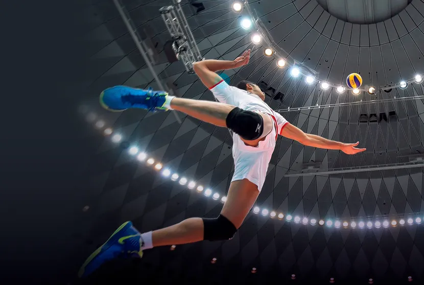

O voleibol, popularmente conhecido como vôlei, é um esporte de equipe que cativa pessoas ao redor do mundo com sua combinação de agilidade, força e estratégia. Jogado em uma quadra dividida por uma rede, o objetivo do jogo é fazer a bola tocar o chão no campo adversário, enquanto se evita que a bola caia em seu próprio lado da quadra. Com seis jogadores de cada lado, o vôlei exige coordenação, comunicação e reflexos rápidos, tornando-o emocionante tanto para os jogadores quanto para os espectadores.
O vôlei é um esporte que promove valores como trabalho em equipe e determinação. Além disso, é um esporte inclusivo, permitindo que pessoas de diferentes idades e habilidades participem ativamente. Seja jogado em nível amador em uma praia ensolarada ou em competições de alto nível nas Olimpíadas, o voleibol é uma paixão compartilhada por muitos, proporcionando entretenimento, saúde e camaradagem em todo o mundo.
